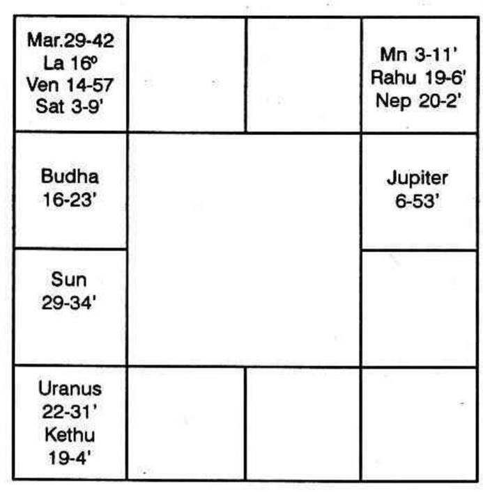
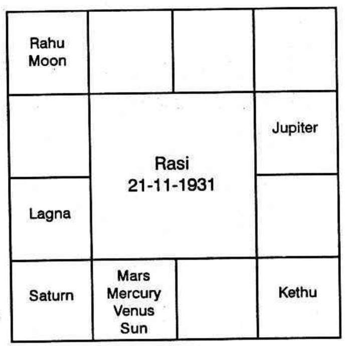
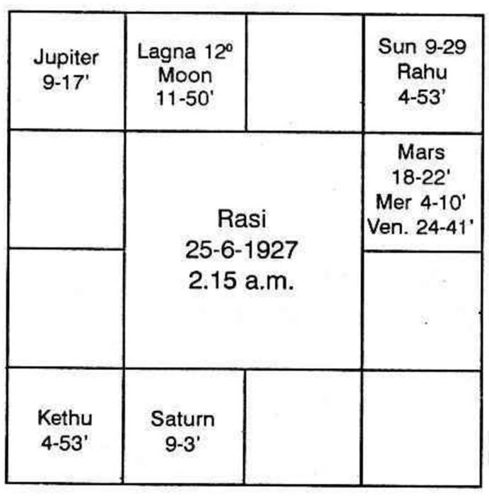

The fourth Bhava (house) in a horoscope signifies the permanent possessions, viz., land, building, or vehicle, the mother as well as one's education.
Mahadeva in Jataka Tatwa says that a person will reside in many houses if the 4th house is a movable sign; or if its lord occupies a movable sign or the Karaka Mars is in a movable sign. It means that during the periods and sub periods of the planet in 4 which is a movable sign, one will change his residence; if the 4th sign is fixed, but its lord is in a movable sign, the person will change his quarters; or during the period of Mars, one has to change his dwelling, if Mars were to occupy a movable sign; In Savartha Chintamani, Venkatesa says that movable signs indicate houses in many localities.
"If the 4th house, its lord or Mars were to be in a fixed sign, the person will live permanently in the same house." The 4th house may be a fixed sign. So planets in 4th Bhava and in fixed signs, will not allow one to change his quarters. If the lord of the 4th house, which may even be movable, occupies a fixed sign during his period, the native cannot shift. If Mars occupies a fixed sign, the native will remain in the same house during its period.
"If the lord of the 4th house is in a benefic Amsa, he will live permanently in one building (Chap. III, Sl.98 to 100.")
He says "Find out who owns the first, second and fourth houses? Note how many of them occupy either Kendra or Kona, (Kendra means 1, 4, 7, 10,; Kona means 1, 5, 9.) Depending on the number of planets, one is to predict the number of good houses resided in and to be resided in by the person."
In Jataka Parijata it is said that the acquisition of houses is to be determined from the 4th Bhava.
He says: If the fiery planets, Sun or Mars, occupy the 4th Bhava and be in depression or in enemy's camp, the person will not own a house."
"If the lord of the 4th Bhava is in the 12th house, the native will live in other's houses in a foreign place." "If the lord of the 4th house is in 8," the author says, "there will be no dwelling house owned or tenanted by the native." "If the lord of the 4th house be in the 6th house, he will lodge in a house owned by uncle, cousin, etc.
He adds "if the lord of the 4th house is in a Dushsthana (i.e., 6, 8 or 12) or if an evil planet occupies the 4th house, then the house owned by him will be haunted."
"The lords of 2, 4 and 12 in 12 in 3, 6, 8, or 12 indicate the number of houses to be lost by the native".
He encourages by saying that one will be lucky to own as many strong houses in good condition as the number of beneficial planets in the Trikonas and Kendras.
Mahadeva is of opinion that the lord of the 4th house, in combination with the lords of 6 and 8, causes the destruction or loss of the house.
Varahamihira in brihat Jataka says that people, born with Moon in Cancer or in Virgo, will own houses. It does not mean that all those born in Cancer Rasi will build houses and those born with Moon in Virgo will own them. Here one is to note whether Moon was in a favourable sub and constellation. Also one should note the lordship of Moon. Otherwise, in many cases, it will not come true. But those born with Moon in Gemini or Virgo, Libra or Scorpio, Pisces or Aries, own good houses. If Moon is also strong and beneficial, it will give a house to the person during its period.
Kalidas also has said in Uthrakalamrita, that beneficial Moon and Jupiter will bless one with a house.
Prithuyasas mentions that a person will acquire a dwelling house during the dasa of a planet, if the dasa commences on the day when Moon transits in Jupiter's sign.
One lives in other's houses during the period of Mercury, if it would have been debilitated at the time of birth. Also he says that persons, born in Meena Navamsa, live in other's houses. He is of strong opinion that people born in Meena Navamsa, live in other's houses and people born in Karthikai Nakshathra will own many houses.
One can have a strong house, if a benefic occupies the third house and the lord of 4 is also strong.
The house will have a compound wall if there is a benefic in the 3rd house and when the lord of 1 and 4 are both strong.
Thus, various authors have mentioned about the dwelling houses.
(1) 4th Bhava signifies mother, vehicle, education and building.
(2) Mars is the planet which governs buildings, Moon the mother, Venus the vehicle and Mars as well as Moon, the land.
Therefore planets connected with the 4th house and Mars will indicate dwelling house. 4th house and Venus indicate conveyance; 4th house and Moon govern mother; 4th house and Mercury indicate education.
So the planet occupying the 4th house or the planet in the constellation of the occupant, having connection with Mars, the lord of the 4th house, if connected with Mars, and planets in the constellation of the 4th house connected with Mars indicate buildings. If these planets are not connected with Mars, but are connected with Venus, one will have vehicle. If they have connection with Moon, the results refer to mother. If Mercury has connection, it indicates education.
(By connection with Mars, it is meant that a planet may)
(a) occupy the sign owned by Mars, or
(b) occupy the star ruled by it, or
(c) the sub (according to Krishnamurti Padhdhati) governed by Mars, (whatever be the sign and the star.)
Therefore, if one judges about one's house to dwell in, one has to consider the planets connected with the 4th house and also Mars:-
(1) The Planets occupying the 4th house (whatever be the sign) and are either in Mars star or Mars sub.
(2) Planets in the constellation of such occupants,
(3) Lord of the 4th house in the constellation or sub of Mars,
(4) Planets in the constellation of such lords,
(5) And the favourable situation of Mars to the 4th house.
Acquisition of a house may be by inheritance, legacy or by purchasing one. Hence, if the 4th house receiving good aspects from the lord of 10, the native gets a building by inheritance. Here, he does not withdraw money from Bank or borrow, and then buy or build.
But if the 4th house has connection with the lords of 1 and 12th the native will invest the money he has, and convert liquid cash to a solid permanent possession. The second house indicates bank position, one's movable property, liquid cash, etc. The first house indicates that he makes efforts. Twelfth house shows that he spends and invests.
But if the 4th house has connection with the lords of 1, 6 and 12, one will borrow and invest or one may acquire a house through co-operative society, etc.
If the lord of 1 is also the significator of 2 and 6 has no connection with Mars, one borrows money by mortgage.
If the lord of 1 has no connection, but if the lord of 4 and lord of 8 are connected, he will sell away the property. The purchaser is represented by the seventh house; 8th house will be the second house to the purchaser. So he acquires.
If the lord of 4 is connected with the lord of 12 and also Sun, either he loses the house by fire accident or through public auction; one uses much of wood if the planet which gives the house is connected with Jupiter. Kethu and Mars indicate that one will use well-burnt bricks; Saturn and Venus indicate cement. Saturn, Venus and Mars indicate reinforced concrete; Sun, connected with the planet offering the house, shows that the roof may be thatched and grass might have been used; Moon indicates that there will be copious supply of wholesome water; Mercury indicates that he may have twin houses or servant quarters, outhouse, etc. Venus and Moon indicate that one will use lime and render it to give the appearance like marble; Mars and Venus indicate mosaic flooring; Venus gives garden, furniture glass, etc. Saturn gives air-conditioning, frigidaire, etc. Mars improves the kitchen; Venus the bedroom; Jupiter the cash-treasury room; Mercury the reading room; Saturn indicates that he may have a locker, an underground room, cellar, etc.
When one lets the house for others, Sun indicates that it will be let to Government department or Government officials; Moon for nurses, midwives, Navy people; those who work in water supply, etc; Mars indicates surgeon, industrialist, police, military, etc.; Mercury shows business people, agents, journalists, post office, etc.; Jupiter for bank, school; Venus for hotels, silk shop, silver shop, for ladies; Saturn for servants, labourers, etc.
That is why, some people build houses and let them out for bank; some let them out for silk and silver shops; some for laundry; some for saloon, etc. This can be clearly seen in the horoscope of the native.
So also one can find out that the owner of the house where one lives, belongs to one of a particular caste or profession or the quarters belong to Government or local body, etc. by scrutinising the position of the lord of 4, the Dasanatha and Bhuktinatha; i.e. the lords who rule the Dasa, Bhukti, Anthra, etc.
The following horoscope will explain the sale and purchase of house during the different dasa that operated:-

Mars Dasa Balance 1 year, 9 months 23 days. While this native was running Rahu Dasa, Rahu Bhukti, Mars sub period in the first week of July, 1912, the house belonging to his father was sold away.
He purchased a house on 5 - 1 - 1940, when Jupiter Dasa, Mars Bhukti, Jupiter Anthra was operating. He sold this house on 8 - 6 - 1958 during Sani Dasa, Rahu Bhukti, Sani Anthra.
Again on 4 - 7 - 1960 he purchased a building during Sani Dasa, Guru Bhukti, Budha Anthra.
(1) Rahu was in the 4th house-Evil planets in the 4th house indicate loss of a house, if one possess already. That is why, during Rahu Dasa, Rahu Bhukti and later in Saturn Dasa, Rahu Bhukti he disposed off the houses.
(a) Rahu was in Rahu's star and Mars sub. That is why, during Rahu Dasa, Rahu Bhukti Mars Anthra, his father sold away the house, when he was young.
(b) Sani is lord of 11 and also 12; therefore, during evil sub period the results indicated by evil house 12 will operate. During the Bhukti of beneficial planets, in Sani Dasa, beneficial results will be enjoyed as lord of 11. If a planet owns both good and bad house, one should not divide a dasa into two halves and then say first half is good, the other half is bad or first half is bad and the other half is good. But the correct method of prediction would be that during the sub of beneficial planets (not according to their nature, but judging whether one is a benefic or not, by considering its occupation and lordship) to declare agreeable results and also in the sub period of planets owning good houses counted from Lagna and occupying favourable houses counted from Lagna and Dasanatha house;
(c) during Sani Dasa, Rahu Bhukti, Sani anthra he sold away the house on 8-6-1958 and
(d) during Sani Dasa, Guru Bhukti (in 4th Bhava) Budha Anthra (lord of 4th house) he purchased a beautiful house. During Sani Dasa, Guru Bhukti, Mars Anthra he extended the building.
Future Prediction: In December 1971, he will purchase one more house during Mercury Dasa, Mars Bhukti, Mercury Anthra, sell away one in Mercury Dasa, Rahu Bhukti, Sani Anthra and have one more in Jupiter Bhukti, Mercury Anthra.
You will recollect that I consulted you last February 1966, regarding "Purchase of a New House". You gave appointment for only 10 minutes; within the short time, you corrected my horoscope, dasa bhukti calculations etc., and predicted that I will surely purchase a house between 4th and 7th March, 1967. You also published the details of the prediction in your Magazine April 1966 issue, and also in your Padhdhati, Volume II, pager 143 to 145 (titled "Purchase of a house") with my horoscope, without mentioning the name, and also discussed the various points for your making a particular prediction.
Proper indications came, during November 1966 and I purchased a fine house bearing No. 5 at Mundakanni Amman Koil Street, Mylapore, Madras-4 and occupied the same during the period mentioned by you, i.e., by 5th March 1967.
I am highly pleased to write to you this letter as the prediction given by you is found to be quite correct, and I assure you, Sir, that no other Astrologer gave such a correct and accurate prediction mentioning the date etc., nor I think any can give.
In this circumstances, I would also request you to continuously conduct the lectures on every Sunday at Bharatiya Vidya Bhavan at Mylapore to enable more friends to get in touch with you, benefit through your valuable predictions, who in turn will offer correct prediction to others and be useful to the public.
On this New Year's Day, we sincerely pray Lord Uchishta, Maha Ganesh to bless you and your family with long life, happiness and prosperity to enable you to continue this great service, you are now doing to the common people like me, and by introducing a new simple method of this "Krishnamurti Padhdhati" which is really very useful for us.
Once again; Thanking you, Sir,
Yours sincerely,
A.V.K. MURTHY

To purchase a house, one has to scrutinise (1) the house (Bhava) 4, as the 4th house indicates permanent possession, land and building, other than Vehicle, etc. The 11th house shows the gains which one can have. The 12th house indicates the cheque to be issued in favour of one who sells the house. Therefore, one has to look to the houses, 4, 11 and 12.
11th house indicates the acquisition. It may be either a movable or an immovable one. Since building or land comes under immovable property, one has to judge both the 4th and 11th houses. Unless we pay, we cannot possess a house. Payment is indicated by the 12th house. So, the houses 4, 11 and 12 are to be judged.
While judging the houses, we have to find out which planets occupy these houses and if so, note down the stars governed by these planets. Ascertain which planets occupy the constellation of the occupants of these houses. Whether there is any planet in such a constellation or not, note down also the occupants. Undoubtedly, the planets in their constellations are strong significators:
So, note down the planets occupying the constellation and also occupying these bhavas. As you have got majority of the planets occupying the houses 11 and 12 and no planet is in the 4th house, we can very well take that those planets which occupy these houses and also which aspect these houses or rule these houses will surely bless you with a house. For people born in Capricorn (Makara) lagna, Venus (Sukra) is Rajayogathipathi. By Rajayogathipathi, one understands that one can have his desires fulfilled. Saturn who is lord of 1 and 2, can contribute to one's success and acquisition. Saturn is occupying the Constellation Poorvashada which is ruled by Venus (Sukra), who is the Rajayogathipathi and Venus at the time of birth was occupying the constellation Jyeshta ruled by Mercury (Budha), lord of 9. According to me, there will be to some extent such beneficial results similar to Darmakarmathipathiyoga (Lord of 10, occupying the constellation of lord of 9).
One is to note that unless the 9th or 6th house also operates, it is not possible for one to take possession of the building which one purchases. Why? 6th house is 12th to the 7th; which denotes the person who sells. 9th house is the 12th to the 10th (which is the 4th to the 7th.) In the constellation of lord of 6 and 9, Venus is posited. Therefore, Venus is a strong significator. Lord of the 12th house is Jupiter and it is in exaltation and it is also in the constellation of Mercury which also indicates that the seller will lose his property as Mercury rules the 3rd and 12th houses counted from 7th house. What is the 3rd house? 3rd house is Vyaya to the 4th, 4th house indicates permanent possession. Vyaya to 4th house would mean to give away land or building. Therefore, planets occupying the stars of the significators of the 3rd house are strong enough to indicate. Sukra Dasa, Sun Bhukthi, Guru Anthra will be the period when you will purchase a house and occupy it. When a doubt arises whether a particular anthra will give a result or not, the best thing would be to note down the moment at which the person puts the question. Moon is called Mathi. It indicates the mind. It gives the urge to put a question. Note where Moon is transiting at the time when the native puts the query. To-day, it is 21st February, 1966. Moon is in Aquarius (Kumba) and in Poorvapadrapada Nakshathra. Aquarius (Kumba) is ruled by Saturn and Poorvapadrapada is governed by Jupiter (Guru). Therefore, Saturn and Jupiter must rule the time when it will materialise. Again lagna at which you put the query is Libra (Thulam) and it is owned by Venus (Sukra). Therefore, the present moment is Thula lagna and Poorattathi Nakshathra. Therefore, Sukra Dasa, Sukra Bhukti, Guru Anthra will be the period when you will have it.
But, there is another school of thought that when Moon transits in a particular position, the native puts the query and when the significators transit that particular degree the native will have that ambition realised. Now Moon is around 22 in Aquarius. Therefore, on the day when Sun or Sukra is in 22 of Aquarius, you will possess the house, i.e., around 5th March 1967. He did buy on 4-3-1967.
Horoscope:-
Kethu Dasa balance 0 year, 9 months, 13 days.
During Moon Dasa, Saturn Bhukti on 6-2-1960 a new house was built and occupied. When can this building be disposed of?
Acquisition of a house: Judge the second, fourth and eleventh bhavas.
Disposal of a house: 3rd, 5th and 10th bhavas.
A building is indicated by the 4th house counted from Lagna. Always count from Lagna. Never consider whether Moon sign is strong or Lagna is strong. In the research after 1967 it was found that we have to take always the Lagna alone. We should never Judge which is stronger whether moon sign or Lagna. The main reason is that in a twin birth, only the cusps of the house including ascendant change whereas Moon is in the same position. What we had been following in K.P. printed in 1966, is to be given up. Sun and Rahu are in second bhava. Mars and Venus are in the 4th and Jupiter is in the 11th bhava. Stronger than Sun is Rahu as they are conjoined. Stronger than Jupiter is Ketu as it occupies the sign ruled by Jupiter. Further, Ketu is to give the results of Sun as it is aspected by Sun. Mars and Venus show matters connected with buildings as they are in 4th house. Rahu's stars are Arudhra, Swathi and Sathabisha. Sun alone is in Arudhra.

Ketu governs Aswini, Makam and Moolam. Moon and Ketu are in Aswini and Moolam. Mars rules Mrigasira trine stars-no planet in any. Venus governs Bharani trine stars-no planet in any of the three stars.
Venus owns 2nd house: Moon 4th house and Saturn 11th house. No planet is in any of the three stars of Venus: None in the three stars of Moon. But in the constellation of Saturn, Mercury is in Pushya. Saturn in Anuradha and Jupiter in Uthrapathrapada. Hence, Mercury, Saturn and Jupiter are for offering the results indicated by 11th house. Therefore, Moon (in Ketu's star who represents Jupiter, strong in his own sign, occupies 11th bhava and is in the constellation of lord of 11 Saturn) Ketu, Saturn, Rahu are the strong significators to acquire own house; to occupy a new premises, etc. Actually, you had a new house built for you during Moon Dasa, Saturn Bhukthi, Rahu Anthra on 6-2-1960 - a Saturday ruled by Saturn who is the lord of the sub period bukthi, Rohini star day governed by Moon, whose dasa was running.
For disposal, study the houses 3, 5 and 10.
Mercury is in the 3rd house; no planet occupies 5 or 10.
Mercury's stars are Ashlesha, Jyeshta and Revathi. Asilesha is occupied by Mars and Venus.
Lord of 3 is Mercury; lord of 5 is Sun and lord of 10 is Saturn.
Mars and Venus are in Mercury's star; none in Sun's star; Saturn, Mercury and Jupiter are in Saturn's star. Hence, Mars, Mercury, Saturn, Venus and Ketu are strong significators.
Further, one can judge in the following manner. Saturn as lord of 10 has the effect to cause the sale.
Moon, representing Ketu (as Moon was in Ketu's star) in its dasa offered a building, as Ketu denotes 11th bhava results.
Mars, under the sway of Mercury, as it was in Ashlesha, causes sale of a house in its dasa.
Hence, in Mars Dasa, Saturn Bukthi, Mercury Anthra, you will enter into an agreement and during Mars Dasa, Saturn Bhukti, Venus Anthra you will hand over the possession on a Dhanishta or Anuradha star day. You can receive advance in the beginning of March 1967 and finish the sale deed by June 1967.
As Mars is in the constellation of lord of 11 during Mars Dasa, there can be no desperate sale, but you will make up satisfactorily.